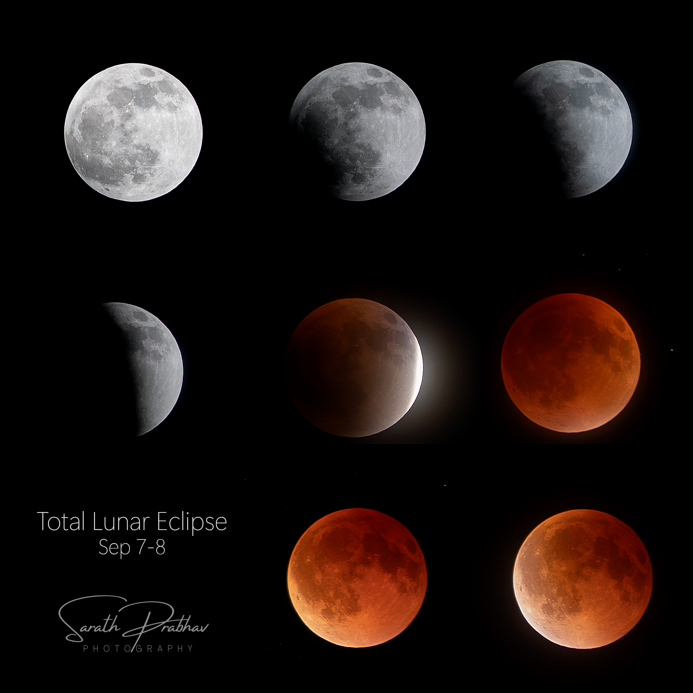
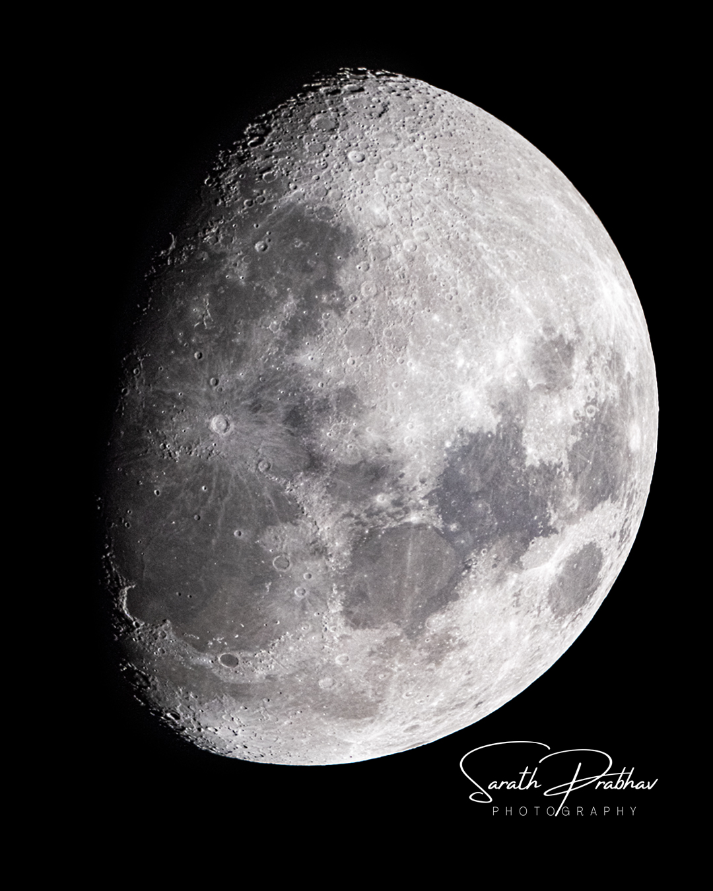

Outreach Activities
Astronomy workshops, public talks, training programs, sky observations, and outreach engagements.
- Feb 09, 2026 – "Starry Messenger" - Talk and Stargazing, St.Thomas College Palai,Kottayam
- Feb 07-08, 2026 – "Treasure Hunt" , Model Technical Higher Secondary School, Ernakulam
- Feb 04, 2026 – Telescope Observation , GHSS Puthur, Kollam
- .............Archival Ongoing............
- Dec 27-29, 2025 – Indian Space Science Olympiad, Edumithra, IISc Bangalore
- Oct 19, 2025 – Stellar Evolution Talk, Online Library, Pallichal, Thiruvananthapuram
- .............Archival Ongoing............
- .............Archival Ongoing............
- Aug 23, 2023 – Chandrayaan Landing Live & Astro-Imaging Session, Sree SathyaSai College, Thonnakkal, TVM
- Aug 22, 2023 – Skywatching Session, Gowreeshapattom Residence Association
- Aug 22, 2023 – Chandrayaan 3 Panel Discussion, Asianet News
- Aug 22, 2023 – Training on Astronomical Coordinates, MSc Space Science Students, All Saints College, TVM
- Aug 14–16, 2023 – Edumitra International Space Olympiad (Online Workshop), UAE
- Aug 07–11, 2023 – Edumitra International Space Olympiad Online Training
- Aug 06, 2023 – Day-long Basic Astronomy Session, Gifted Children Programme, GHSS Kottarakkara
- Jul 24, 2023 – Moon Day Celebration & Telescope Observation, Amrita Vidyalayam, Nedumangad
- Jul 22, 2023 – Moon Day Celebration, GHSS Kummil, Kollam
- Jul 21, 2023 – Moon Day Celebration, GLPS Sooranad, Kollam
- Jul 21, 2023 – Science Club Inauguration & Moon Day Celebration, MTHSS Channappetta, Anchal
- Jul 20, 2023 – Exoplanets & Transit Light Curve Activity, IIST Student Camp, TVM
- Jul 08, 2023 – Moon & Water Rocket Activities, GHSS Vellanad
- Jun 01–20, 2023 – Python Course Season 2 (Online Program)
- Jun 02, 2023 – Astrophotography Workshop, IEEE KMEA College, Aluva
- May 25, 2023 – Astrophotography Talk, Vikram Sarabhai Foundation, LNCPE TVM
- May 23, 2023 – Science Summer School for Children, Priyadarshini Planetarium, TVM
- May 15–19, 2023 – Space Safari Online Astronomy Camp, Edumitra
- May 11, 2023 – Science Summer School, Priyadarshini Planetarium, TVM
- May 08, 2023 – Science Summer School, Priyadarshini Planetarium, TVM
- May 04, 2023 – Astrophotography & Andaman Expedition Talk, AASTRO Kerala Monthly Talk
- Apr 25–30, 2023 – International Space Olympiad Training (Online), Edumitra Campus Kochi
- Apr 20–24, 2023 – Stargazing & Meteor Shower Events
- Apr 17, 2023 – Science Summer School, Priyadarshini Planetarium
- Mar 01–31, 2023 – Andaman Expedition
- Feb 26, 2023 – Stargazing Session, Punalur
- Feb 24, 2023 – Astronomy & Astrophotography Talk, MES College Ponnani
- Feb 05, 2023 – Fundamental Astronomy Activities, Pallichal Library
- Feb 04, 2023 – Astronomy & Life Talk, AASTRO Kerala, Vellayani
- Feb 01, 2023 – Astronomy Talk & Stargazing, Govt Women’s College TVM
- Jan 29, 2023 – Exoplanets Talk, Cochin (Outgrow)
- Dec 27–29, 2022 – Space Olympiad Camp, Edumitra, Thrissur
- Dec 28–30, 2022 – Online LaTeX Workshop, CSIDR
- Dec 17–18, 2022 – Sky Observation Camp, Sayalgudi Beach (StarVoirs)
- Dec 10–11, 2022 – Astronomy & Astrophotography Workshop, AGASTYA Foundation, Andhra Pradesh
- Oct 29–30, 2022 – Sky Observation Camp, Sayalgudi Beach
- Oct 28, 2022 – Astrophotography Workshop, MES Kuttippuram (IEEE)
- Oct 22–23, 2022 – Sky Observation Camp, Sayalgudi Beach
- Sep 30, 2022 – Jupiter Opposition Talk & Telescope Observation, Planetarium TVM
- Sep 28, 2022 – Telescope Setup & Skywatching, Bharath Matha College, Ernakulam
- Sep 24–25, 2022 – Sky Observation Camp, Sayalgudi Beach
- Sep 14–15, 2022 – Sky Observation Camp, Sayalgudi Beach
- Aug 27–28, 2022 – Sky Observation Camp, Sayalgudi Beach
- Jul 09, 2022 – “Know the Moon” Session, Kerala Science & Technology Museum
- May 23, 2022 – Budget Astrophotography Workshop, Kovalam
- May 08, 2022 – Mobile Astrophotography Workshop
- Apr 03, 2022 – Telescope Making & Astrophotography, SpaceUp CUSAT
- Mar 27, 2022 – Night Photography Workshop, Mar Ivanios College
- Mar 02, 2022 – “How Big is Our Universe” Talk, Govt UP School Anachal
- Dec 04, 2021 – ABC of Stargazing, IEEE EXPLORICA
- Nov 28, 2021 – Budget Astrophotography Talk (Online)
- Sep 10, 2021 – Sky Coordinates & Astronomy Course
- Jun 06, 2021 – Stellar Evolution Talk, RCET Kochi
- Jan 2021 – Electrostatics Course (Swayamprabha DTH)
- Dec 21, 2020 – Jupiter–Saturn Great Conjunction Live Stream, CUSAT
- Jun 04, 2020 – Sky Coordinates Online Course
- Apr 26, 2020 – Basics of Astronomy Online Course (1 Month)
- Dec 12, 2019 – Solar Eclipse Talk, Kozhikode
- Dec 07, 2019 – Eclipse Talk, Science & Technology Museum TVM
- Nov 23, 2019 – Solar Eclipse Demo, Karyavattom College
- Oct 17, 2019 – Astronomy Workshop, Kondotty
- Sep 02, 2019 – Astronomy & Sky Observation Camp, Kalpakkam
- Aug 28, 2019 – Dark Matter Talk, Kollam
- Aug 24–25, 2019 – Astronomy & Photography Workshop, Chennai
- May 03–05, 2019 – Science Camp Activities, Kovalam
- Apr 12–20, 2019 – Astronomy Summer School, AASTRO Kerala
- Apr 05, 2019 – Universe Size Talk, Science Camp
- Mar 30–31, 2019 – Astronomy Workshop, Maharajas College
- Jan 05, 2019 – Basic Astronomy Talk, SIET Kerala


